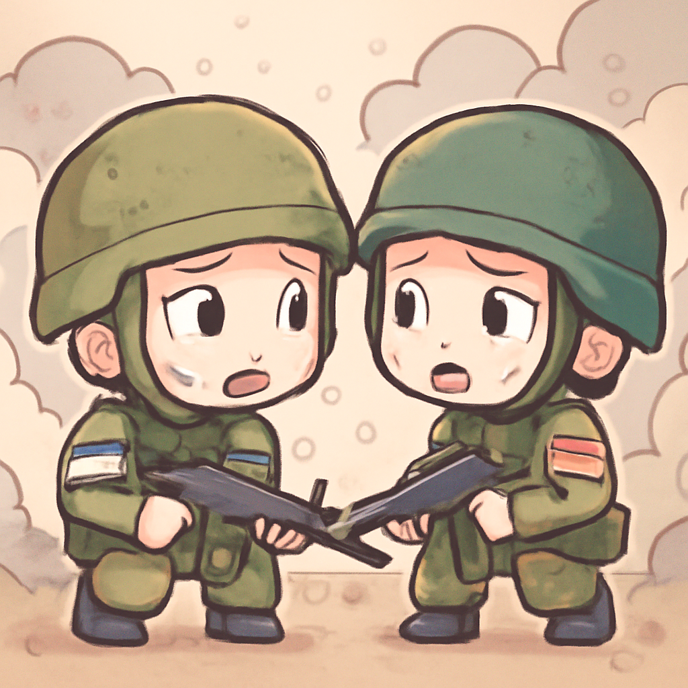
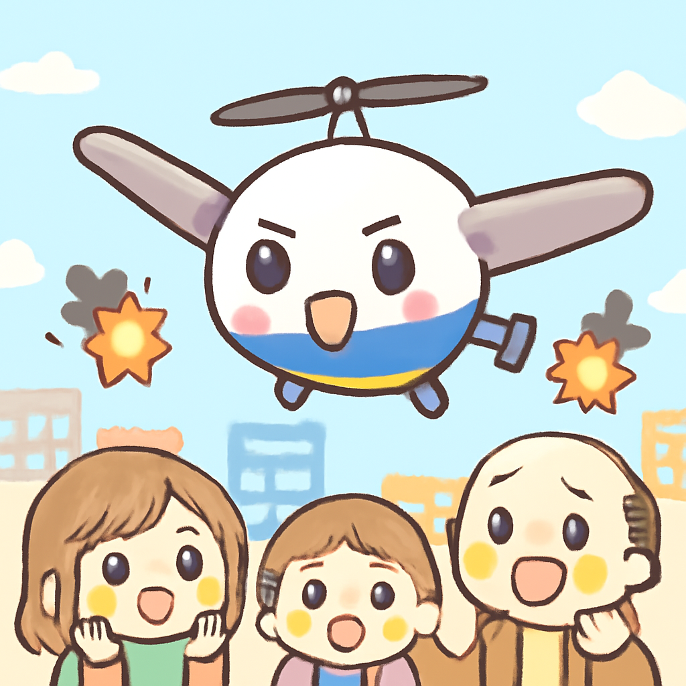
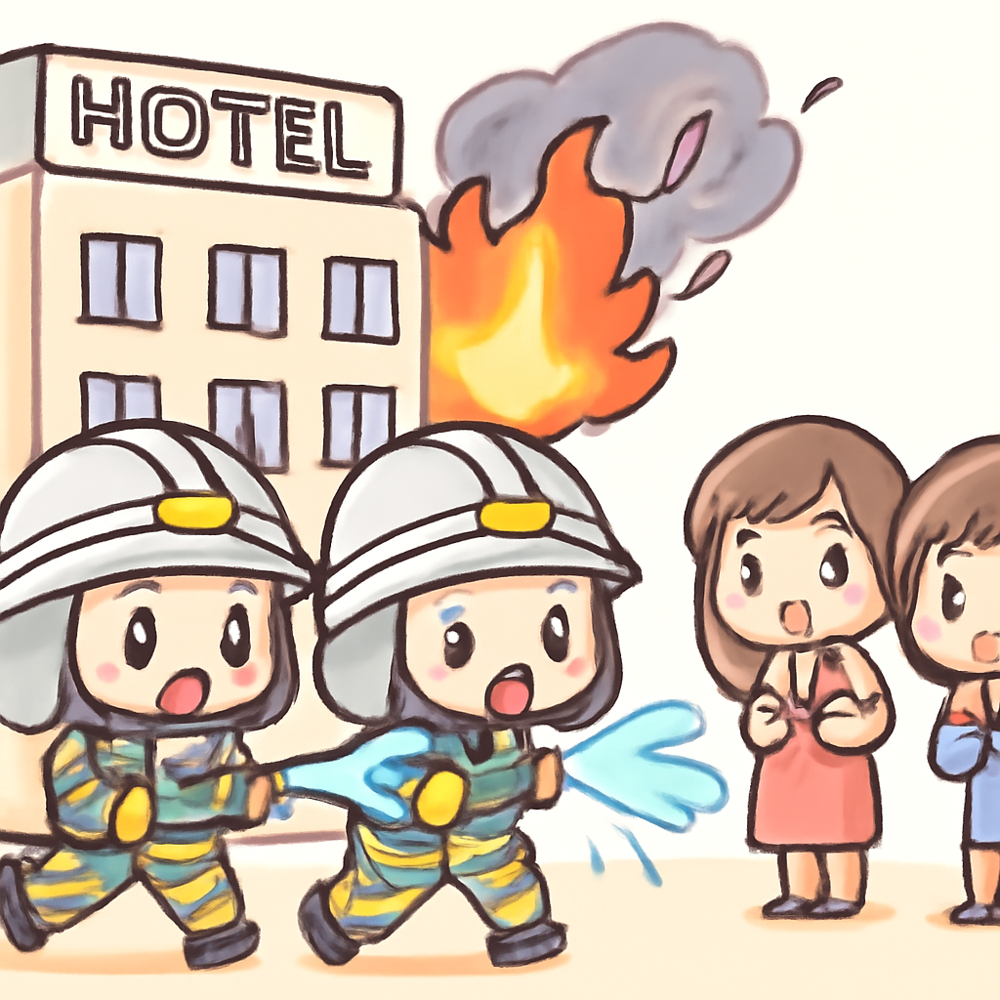
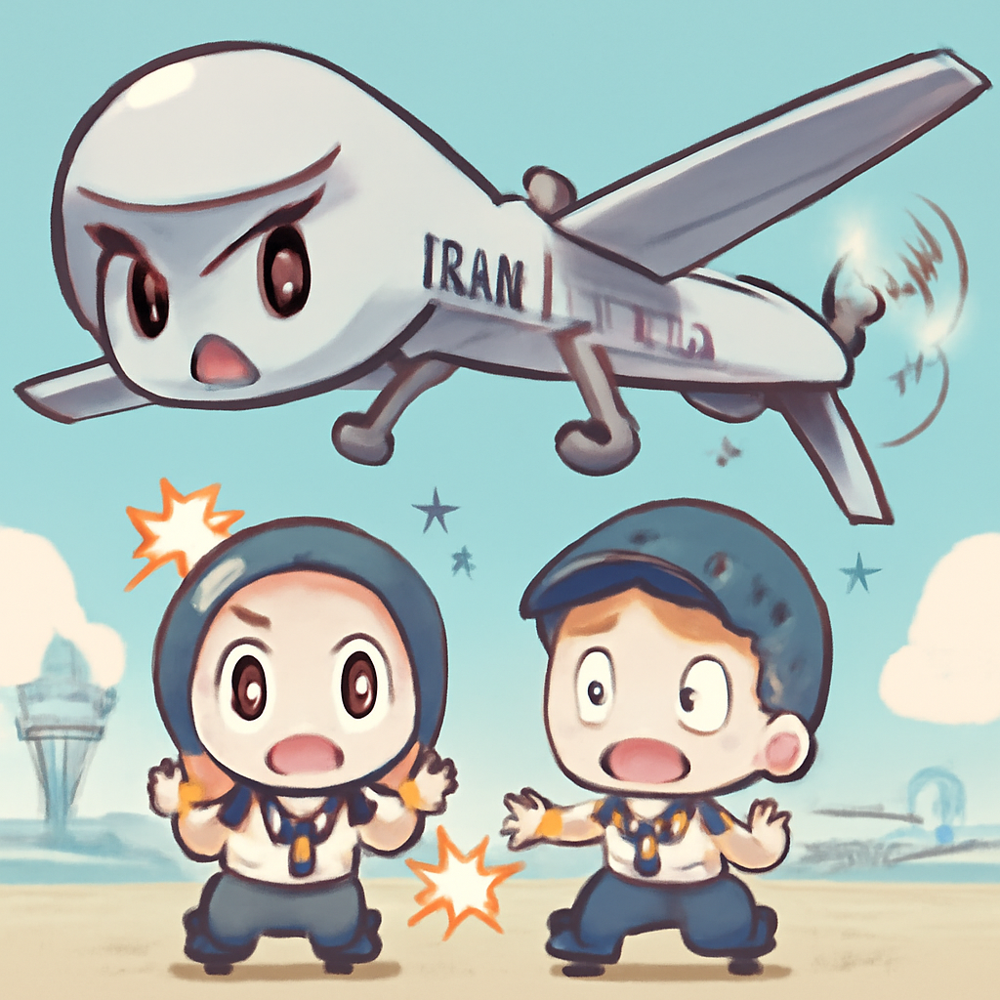

其一 · 以色列黎巴嫩 · 以色列空襲造成九人死亡
以色列對黎巴嫩的攻擊加劇緊張局勢。

在黎巴嫩，近期以色列的空襲造成九人喪生，這讓本已脆弱的停火協議岌岌可危。這場衝突不僅影響了當地居民的安全，也讓國際社會對中東局勢的擔憂倍增。希望雙方能夠坐下來好好談談，而不是在空中「對話」。
🔗 原始新聞 ↗
2026-06-04 · 以古觀今，以笑抗愁
以色列對黎巴嫩的攻擊加劇緊張局勢。

在黎巴嫩，近期以色列的空襲造成九人喪生，這讓本已脆弱的停火協議岌岌可危。這場衝突不僅影響了當地居民的安全，也讓國際社會對中東局勢的擔憂倍增。希望雙方能夠坐下來好好談談，而不是在空中「對話」。
🔗 原始新聞 ↗
美國國會以215票贊成通過停止對伊朗的軍事行動。
在華府，國會眾議院以215票對208票通過了一項提案，要求停止對伊朗的軍事行動，這對特朗普政府來說無疑是一次重創。這一決定顯示出美國內部對於外交政策的深刻分歧，未來可能影響美伊關係的走向。希望未來的外交會議不會變成「拳擊比賽」。
🔗 原始新聞 ↗
烏克蘭無人機襲擊在普京經濟論壇前夕發生。

隨著普京的經濟論壇即將開幕，烏克蘭的無人機對聖彼得堡的油庫發動攻擊，這讓俄國的戰略布局更加撲朔迷離。這一事件不僅是軍事行動，也在向國際社會發出強烈信號，表明烏克蘭不會輕易妥協。希望普京的論壇不會因為這場攻擊而變成一場「戰爭秀」。
🔗 原始新聞 ↗
新德里酒店大火造成多國外籍人士遇難。

在新德里，一場致命的酒店大火造成至少21人喪生，許多受害者是來印度尋求醫療的外籍人士。這場悲劇不僅讓家屬心碎，也再次引發對印度火災安全措施的討論。希望未來的酒店能夠提供更多的安全保障，而不是讓客人「體驗」生死時速。
🔗 原始新聞 ↗
伊朗對科威特的襲擊造成一死多傷。

在科威特，一架伊朗無人機襲擊了機場，導致一人喪生，多人受傷。這次攻擊被伊朗視為對早前美國襲擊的報復，讓本就緊張的中東局勢再次升溫。國際社會密切關注，未來的局勢發展可能會影響到整個地區的安全。希望在這樣的時期，大家都能冷靜一點，別讓火藥味充斥空氣。
🔗 原始新聞 ↗